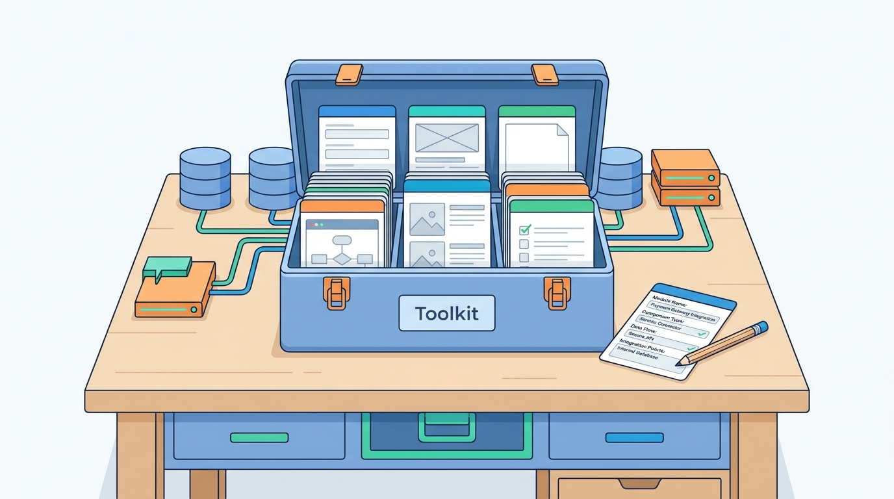

Reference
Toolkit: Cards and Templates for Commerce Architecture Decisions
AI-assisted: researched and written with Claude Code and Codex; illustrations generated with Gemini and OpenAI image tools. How this works

Reference
AI-assisted: researched and written with Claude Code and Codex; illustrations generated with Gemini and OpenAI image tools. How this works
